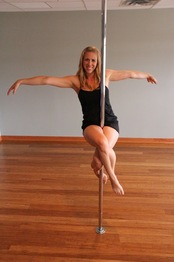

¿Qué es Fitness? » Su Definición y Significado [2021]
 Letras Letra A Letra B Letra C Letra D Letra E Letra F Letra G Letra H Letra I Letra J Letra K Letra L Letra M Letra N Letra Ñ Letra O Letra P Letra Q Letra R Letra S Letra T Letra U Letra V Letra W Letra X Letra Y Letra Z Categorías Ciencia Economía Educación Humanidades Psicología Salud Definición › F › Salud 🩺 › Fitness
Letras Letra A Letra B Letra C Letra D Letra E Letra F Letra G Letra H Letra I Letra J Letra K Letra L Letra M Letra N Letra Ñ Letra O Letra P Letra Q Letra R Letra S Letra T Letra U Letra V Letra W Letra X Letra Y Letra Z Categorías Ciencia Economía Educación Humanidades Psicología Salud Definición › F › Salud 🩺 › Fitness
Fitness
La palabra fitness es un vocablo inglés que significa “bienestar”. Su significado engloba dos nociones que se encuentran relacionadas con el tema de la salud . Por una parte se considera fitness al estado de salud física obtenido, no sólo por llevar una vida sana, sino también por la continua práctica de ejercicios . Por otra parte, este término indica ciertos tipos de actividades físicas, que por lo general se realizan en determinados sitios deportivos.
El realizar cualquier actividad física, permite a la persona mantenerse sano y evitar el surgimiento de enfermedades como la hipertensión, la diabetes o padecimientos cardiovasculares. El fitness consiste en la realización de ejercicios, combinando los aeróbicos con los anaeróbicos , con la finalidad de reducir un poco la masa corporal, así como para el entrenamiento de los músculos.
En la actualidad este término ha estado muy de moda entre los que aman la vida saludable y el poder ejercitarse para mantener su cuerpo en forma. Son variadas las actividades físicas consideradas como fitness, algunas de ellas son:
Los aerobics, los cuales consisten en la realización de coreografías guiadas por un instructor. Este tipo de ejercicio permite el incremento de de los ritmos cardiorespiratorios aunado a la eliminación de toxinas.
Pilates . Estos ejercicios son muy precisos y son realizados en máquinas especiales con la finalidad de tonificar los músculos.
Tai chi chuan. Es una combinación de ejercicios leves empleando respiración y meditación . Se practica para reducir un poco el estrés , permitiendo la relajación.
Spinning . Este tipo de ejercicio se realiza sobre una bicicleta fija, a la cual se le puede ajustar la fuerza e intensidad del ejercicio. Durante la ejecución del mismo se trabajan los músculos de las piernas.
Si practicas fitness de manera continua, los resultados se verán rápidamente , el cuerpo tendrá mayor resistencia y flexibilidad, acentuando la sincronización de los movimientos. De igual manera se podrá bajar de peso y finalmente la persona notará un mejoramiento en su calidad de vida, la cual se verá beneficiada física y psicológicamente.
El fitness ayudará a dejar a un lado el estrés, los pensamientos negativos, convirtiendo al individuo en un ser positivo. Es importante la alimentación, no comer grasa, reducir el consumo de azúcar, etc. más bien se recomienda la ingesta de verduras, frutas y vegetales.
Sistema Muscular Voleibol Corazón
Bibliografía
, Redacción. ( Última edición:9 de febrero del 2021). Definición de Fitness. Recuperado de: https://conceptodefinicion.de/fitness/. Consultado el 12 de julio del 2021
Comparte este artículo
Conceptos recientes:
Desastre Natural Estrofa Examen Hantavirus Campo Eléctrico Curriculum Vitae Poder JudicialRelacionados
Concepto de Ficha Bibliográfica
Concepto de Fútbol Americano
Concepto de Fiebre
Concepto de Fuente de Poder
Concepto de Fenómeno
Concepto de Filia
Concepto de Fobia
Concepto de Farmacología
*
Inicio Política de cookies Politica de Privacidad Terminos de servicio Contacto© 2011-2021 Concepto Definición. Todos los derechos reservados.
